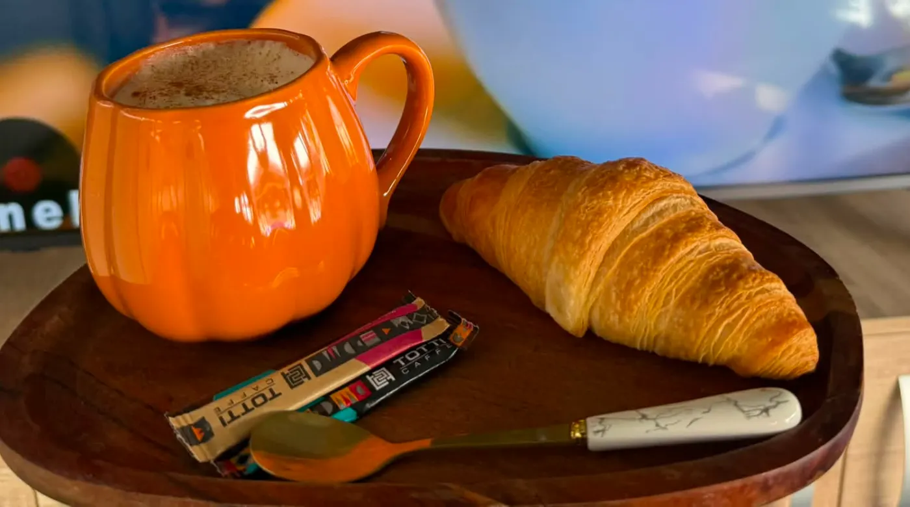

NyitásH–Szo 7:00
07reggel
Kávé és kroasszon, mielőtt elindul a nap.
A Vándor reggel kávézó: frissen főzött kávé, egy vajas kroasszon, és pár csendes perc a főtéren — vagy nyáron a teraszon, a fák alatt.
- Finom kávék, reggel héttől
- Terasz a fák alatt, árnyékban